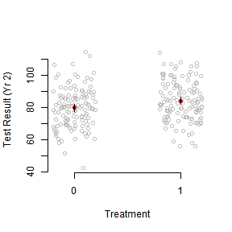
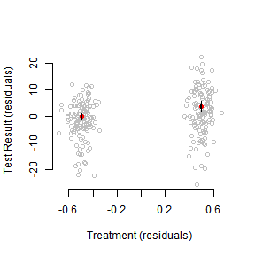

The “Four questions” may have been a little confusing.
Let me re-break down the last two questions as “Identification” and “Estimation”
“A regression is causal when the CEF it approximates is causal” - MHE
Identification consists (in this context) as the set of things you need to believe in order to believe the CEF is causal.
Thus, when we think about identification, we should think about assumptions.
Estimation is the process you use to estimate the CEF.
In practice
The Conditional Independence Assumption would fall in identification.
I’d also throw in assumptions of additivity / linearity in this pot.
Estimation would include the populations/samples of interest, and all statistical inference.
But there’s a close connection between the two.
Problems in estimation can lead to changes in identifying assumptions.
So they aren’t completely separable.
Covariate Adjustment in sampling
Lin, Winston. (2013) “Agnostic Notes on Regression Adjustments to Experimental Data: Reexamining Freedman’s Critique” Annals of Applied Statistics. 7(1):295-318.
Imagine that we are biologists. We are interested in leaf size.
Finding the size of leaves is hard, but weighing leaves is easy.
Key insight is that we can use auxilliary information to be smarter:
Sample from leaves on a tree.
Measure their size and weight.
Let \(\hat{y}_s\) be the average size in the sample.
Let \(\hat{x}_s\) be the average weight in the sample.
Population averages drop the subscript.
We know that \(\hat{y}_s\) unbiased and consistent for \(\hat{y}\)
But we have extra information!
We also have \(\hat{x}\) (all the weights)
This motivates the regression estimator: \(\hat{\bar{y}}_{reg} = \hat{y}_s + \beta(\hat{x}-\hat{x}_s)\)
We get \(\beta\) by a regression of leaf area on weight in the sample.
Connection to Multiple Regression
In the case of OLS for the analysis of experiments, we have nearly the same setup.
Only difference is that we are sampling for both treatment and control.
This means that we must adjust both groups separately.
This motivates the use of covariate-treatment interactions.
Remember! Freedman (2008) showed that regression is biased and can be inconsistent for an experimental parameter in the case when interactions aren’t included.
This is something to consider in many different situations. There’s no reason to expect treatment and control groups to exhibit identical effects (even ones that are orthogonal to the causal parameter of interest)
This is just a particular sort of omitted variable bias, which you should already be familiar with.
Covariate Adjustment in Experiments
Now imagine we are social scientists (hopefully this isn’t hard)
We are interested in the effects of a binary treatment on education, measured by a test.
Let’s set up a simulation.
250 students. Ten classes of 25 students each. Observed over two years.
First year has half good teachers and half bad.
We want to estimate the effect of the intervention in year 2.
Treatment is assigned randomly by individual
Note: This setup usually demands an accounting of clustering, which I’m ignoring. Maybe I’ll bring it back later in the semester when we discuss SUTVA.
Simulation
#Variables which govern the size of the simulation (and our causal effects)
nclass <-5
nstudent <-25
Eff <-5
EffSD <-3# Simulate dataset.seed(1977)
Yr1ClassType <-rep(c(1,0),nclass*nstudent)
Yr2ClassType <-sample(Yr1ClassType,replace=FALSE)
Yr1Score <-rnorm(2*nclass*nstudent,76+Yr1ClassType*5,9)
# Fixed margins randomization
Trt <-sample(Yr1ClassType,replace=FALSE)
# There is an independent effect of class type in each year# Variance is different across class types in year 2
CtlOutcome <-rnorm(2*nclass*nstudent,Yr1Score+Yr2ClassType*3,9-Yr2ClassType*4)
# Treatment effect is random, but with expectation Eff
Yr2Obs <-CtlOutcome +Trt *rnorm(2*nclass*nstudent,Eff,EffSD)
summary(lm(Yr2Obs~Trt))$coefficients[2,]
## Estimate Std. Error t value Pr(>|t|)
## 4.307282238 1.558184168 2.764295984 0.006132827
summary(lm(Yr2Obs~Trt+Yr1Score))$coefficients[2,]
## Estimate Std. Error t value Pr(>|t|)
## 3.5206647114 1.0064194358 3.4982081884 0.0005553714
# We don't want the model-based SEs,# we want the robust standard errors:try(library('sandwich'),silent=TRUE)
try(library('lmtest'),silent=TRUE)
mod <-lm(Yr2Obs~Trt+Yr1Score)
coeftest(mod,vcovHC(mod,type='HC2'))["Trt",2]
## [1] 0.9997826
Plot Data
plot(jitter(Trt),Yr2Obs,axes=F,xlab="Treatment",ylab="Test Result (Yr 2)",col="grey")
axis(2)
axis(1,at=c(0,1))
# Calculate quantities for plotting CIs
mns <-tapply(Yr2Obs,Trt,mean)
# SEs could also be pulled from the linear models we fit above with:
ses <-tapply(Yr2Obs,Trt,function(x) sd(x)/sqrt(length(x)))
points(c(0,1),mns,col="red",pch=19)
# Note the loop so that I only write this code once
for(tr in unique(Trt)) {
for(q in c(.25,.025)) {
upr<-mns[as.character(tr)]+qnorm(1-q)*ses[as.character(tr)]
lwr <-mns[as.character(tr)]-qnorm(1-q)*ses[as.character(tr)]
segments(tr,upr,tr,lwr,lwd=(-4/log(q)))
}
}

Partial Regression
Can we make that plot a little more friendly?
Let’s residualize our outcome based on scores in the first period. This should remove a substantial amount of the variance in the outcome.
par(mfrow=c(1,1))
plot(jitter(TrtRes),OutcomeRes,axes=F,xlab="Treatment (residuals)",ylab="Test Result (residuals)",col="grey")
axis(2)
axis(1)
# Pull information from the new bivariate model
mns<-coef(lm(OutcomeRes~TrtRes))
ses<-summary(lm(OutcomeRes~TrtRes))$coefficients[,2]
TrtResMns<-tapply(TrtRes,Trt,mean)
names(ses)<-names(mns)<-names(TrtResMns)
points(TrtResMns,mns,col="red",pch=19)
for(tr in names(TrtResMns)) {
for(q in c(.25,.025)) {
upr<-mns[tr]+qnorm(1-q)*ses[tr]
lwr <-mns[tr]-qnorm(1-q)*ses[tr]
segments(TrtResMns[tr],upr,TrtResMns[tr],lwr,lwd=(-4/log(q)))
}
}

Effective Samples
We’re going to be investigating how to check the properties of your effective sample in regression.
The key result is: \(\hat{\rho}_{reg}\,{\buildrel p \over \to}\,\frac{E[w_i \rho_i]}{E[w_i]} \text{ where } w_i = (D_i - E[D_i|X_i])^2\)
We estimate these weights with: \(\hat{w}_i = \hat{D}_i^2\) where \(D_i^2\) is the \(i\)th squared residual.
Because these estimates are “bad” for each unit, using them to reweight the sample is a bad idea.
Instead, we just use them to get a sense for what the effective sample is by examining the weight allocated to particular strata.
We will now explore how to do this.
Example paper
We will be looking at Egan and Mullin (2012)
This paper explores the effect of local weather variations on belief in global warming.
Very cool paper! With an interesting randomized treatment.
But what is the effective sample?
In other words, where is weather (conditional on covariates) most variable?